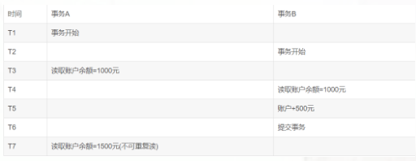
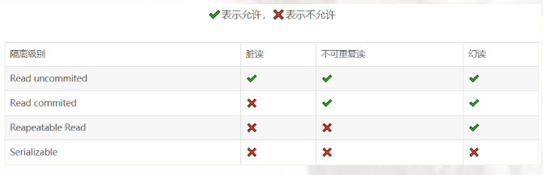

事务
在计算机语言中，一般指访问并更新数据库中的一个程序执行单元。 事务具有的四个特点，称为ACID。在数据库的并发访问中，为了保证数据的读取正确性，设置的事务的隔离级别。
事务的四个特点
- 原子性：原子性是指事务包含的所有操作要么全部成功，要么全部失败回滚。因此事务的操作如果成功就必须要完全应用到数据库，如果操作失败则不能对数据库有任何影响。
- 一致性：一致性是指事务必须使数据库从一个一致性状态 变换到 另一个一致性状态，也就是说一个事务执行之前和执行之后都必须处于一致性状态。拿转账来说，假设用户A和用户B两者的钱加起来一共是5000，那么不管A和B之间如何转账，转几次账，事务结束后两个用户的钱相加起来应该还得是5000，这就是事务的一致性。
- 隔离性：隔离性是当多个用户并发访问数据库时，比如操作同一张表时，数据库为每一个用户开启的事务，不能被其他事务的操作所干扰，多个并发事务之间要相互隔离。
- 持久性：持久性是指一个事务一旦被提交了，那么对数据库中的数据的改变就是永久性的，即便是在数据库系统遇到故障的情况下也不会丢失提交事务的操作。
多事务产生的问题
脏读
A读取B事务尚未提交的事务，并修改了B的数据，然后B对事务执行回滚，那么A读取到的数据为脏读。
不可重复读
事务A读取数据，然后事务B对事务A的数据进行了修改，此后，事务A再次读取数据，这时为不可重复读，最后A提交事务。所以在A的一次事务中，两次读取到的数据不一致。

幻读
事务A查询数据，查询一切符合查询条件的行，这时B新增加一个行数据，A事务再次查询时，发现与第一次查询相比，新增加了一行。
更新丢失
当两个或多个事务选择同一行，然后基于最初选定的值更新该行时，由于每个事务都不知道其他事务的存在，就会发生丢失更新问题－－最后的更 新覆盖了由其他事务所做的更新。
四种隔离级别
Serializable(串行化)：可避免脏读、不可重复读、幻读的发生。Repeatable read(可重复读)：可避免脏读、不可重复读的发生。Read committed(读已提交)：可避免脏读的发生。Read uncommitted(读未提交)：最低级别，任何情况都无法保证。

以上四种隔离级别最高的是Serializable级别，最低的是Read uncommitted级别，当然级别越高，执行效率就越低。
在MySQL数据库中，支持上面四种隔离级别，默认的为Repeatable read (可重复读)；而在Oracle数据库中，只支持Serializable (串行化)级别和Read committed (读已提交)这两种级别，其中默认的为Read committed级别。